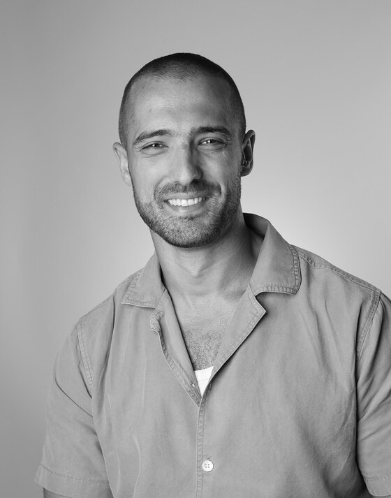

Fundadores

El núcleo científico y comercial.

Cofundador, CEO
Eitan Benson
Ingeniero · Inventor · Abogado de PI
Eitan lidera la estrategia comercial, el portafolio de propiedad intelectual y el desarrollo de asociaciones. Su trayectoria abarca la ejecución de ingeniería, el derecho de patentes y la creación de empresas en etapa temprana, dando a greenLi un fundador que puede moverse entre el laboratorio, la sala de juntas y el ámbito legal.
Cofundadora, CSO
Prof. Hadas Mamane
Ingeniería Ambiental · Universidad de Tel Aviv
Hadas lidera la dirección científica de greenLi. Como directora del laboratorio de la Universidad de Tel Aviv del cual surgió greenLi, aporta una profunda experiencia en tratamiento de agua, procesos de membrana y la electroquímica que hace posible la plataforma de greenLi.